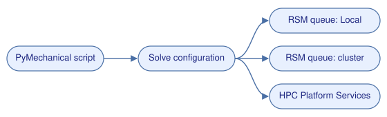

Submit remote solves to RSM queues and HPS#
Important
The RSM workflows in this post require Ansys Remote Solve Manager (RSM).
This includes the Local queue, the My Computer, Background
configuration, and cluster queues. If RSM isn’t available with your
Mechanical installation, install it separately. If RSM is missing or broken,
ExtAPI.Application.RSMQueues doesn’t list a Local queue.
By default, solution.Solve() runs the solver in the same process and on the
same machine as Mechanical. For larger models, you can send the job somewhere
else instead: to a background process, to an HPC cluster through the Ansys
Remote Solve Manager (RSM), or to Ansys HPC Platform Services (HPS).
Mechanical controls where a job runs with solve process configurations. These
are the same entries that you see under Solve Process Settings in the
Mechanical UI. This post shows how to create and use them from a PyMechanical
script. The snippets use the embedded App class, but the same code runs in
the Mechanical scripting console or through run_python_script() in a remote
session.


A solve configuration routes the job to an RSM queue or to HPS.#
Solve configurations and queues#
A solve configuration has two parts:
Settings: where the job goes. This is the RSM queue name, or the HPS server URL, the job name, and the license.SolveProcessSettings: how the solver runs. This includes the core count, distributed solve, and license queuing.
To list the RSM queues and the existing solve configurations, run this code:
from ansys.mechanical.core import App
app = App(globals=globals())
for queue in ExtAPI.Application.RSMQueues:
print(queue.Name, queue.HPCType, queue.HPCConfiguration)
configs = ExtAPI.Application.SolveConfigurations
for config in configs:
print(config.Name, "->", config.Settings.Name)
On a fresh installation, the output shows the Local queue and the
My Computer and My Computer, Background configurations.
Solve through the local RSM queue#
The Local queue runs the job through RSM on your own machine. It is a
quick way to test the submission workflow before you point it at a cluster.
Save the project first#
RSM transfers the solver input files from the project folder. You must save
the project before you submit a job through RSM. If the project is not saved,
the solve fails with the message A general failure occurred during the
solution process.
app.save_as(r"C:\work\valve.mechdb", overwrite=True)
Create the configuration#
config_name = "PyMechanical RSM"
# Configurations persist in your Mechanical user settings.
for config in list(configs):
if config.Name == config_name:
configs.Remove(config)
config = Ansys.ACT.Mechanical.Application.SolveProcessSettings.SolveConfiguration()
config.Name = config_name
configs.Add(config)
config.Settings.Name = "Local"
config.Settings.JobName = "pymech_valve"
config.SolveProcessSettings.MaxNumberOfCores = 2
config.SolveProcessSettings.DistributeSolution = True
Mechanical checks some values as soon as you set them:
Settings.Namemust match a queue inRSMQueues. Otherwise, you getThe given value is not the name of a valid RSM Queue.Settings.JobNamemust be shorter than 16 characters and contain no spaces.
Submit the job and get the results#
solution = Model.Analyses[0].Solution
solution.Solve(True, config_name)
solution.GetResults()
print(solution.Status) # Done
solution.EvaluateAllResults()
Solve() submits the job and returns while the solver runs. At this point,
solution.Status is still SolveRequired. GetResults() waits for the
job to finish and downloads the result files into the project.
For the valve model from the Basic valve implementation example, the RSM solve gives exactly the same maximum deformation and stress as an in-process solve.
The built-in My Computer, Background configuration works the same way. To
run the job in a background process without creating a configuration, call
solution.Solve(True, "My Computer, Background").
Solve on a remote HPC cluster#
To send jobs to a cluster, use the RSM Configuration app to define the
cluster (Windows HPC, LSF, PBS Professional, SLURM, or UGE) and at least one
queue. Submit a test job from RSM to confirm that the setup works. The queue
then shows up in RSMQueues, and the script changes only in the queue name
and the resources:
config.Settings.Name = "<your RSM queue>"
config.Settings.License = "Ansys Mechanical Enterprise"
config.SolveProcessSettings.MaxNumberOfCores = 16
config.SolveProcessSettings.LicenseQueuing = True
solution.Solve(True, config_name)
solution.GetResults()
RSM uses the credentials cached by the RSM Configuration app, so the script doesn’t need a user name or password.
Solve with HPS#
Ansys HPC Platform Services (HPS) runs Mechanical jobs on compute resources
managed by an HPS server. You don’t need PyHPS for this. Mechanical submits the
job itself. To target HPS,
set SolutionExecutionTarget to "HPC Platform Services" instead of
choosing an RSM queue. The server URL and user name use the DCSUrl and
DCSUsername properties.
import os
hps_url = "https://<hps-server>:8443/hps"
hps_config_name = "PyMechanical HPS"
hps_configs = [
c.Name
for c in configs
if c.Settings.SolutionExecutionTarget == "HPC Platform Services"
]
if hps_configs:
hps_config_name = hps_configs[0]
else:
config = Ansys.ACT.Mechanical.Application.SolveProcessSettings.SolveConfiguration()
config.Name = hps_config_name
configs.Add(config)
config.Settings.SolutionExecutionTarget = "HPC Platform Services"
config.Settings.DCSUrl = hps_url
config.Settings.DCSUsername = os.getenv("USERNAME")
config.Settings.License = "Ansys Mechanical Enterprise"
config.SolveProcessSettings.MaxNumberOfCores = 20
config.SolveProcessSettings.LicenseQueuing = True
config.SolveProcessSettings.DCSAutoDownloadResults = True
Setting SolutionExecutionTarget clears Settings.Name, because an HPS
configuration doesn’t use an RSM queue. To reuse a configuration that already
exists, search by SolutionExecutionTarget instead of by name.
The first time you use a new HPS configuration, open Solve Process Settings in Mechanical and sign in to the HPS server. Mechanical keeps the session, so the script never handles a password. After you sign in, submit the job the same way as with RSM:
solution.Solve(True, hps_config_name)
solution.GetResults()
SolveProcessSettings.HPSCloudBurstComputeRequirements exposes the HPS
compute resource, queue, and CPUs and GPUs per node for jobs that burst to
cloud resources.
Clean up#
Solve configurations are saved in your Mechanical user settings and stay there after the script ends. If you created a configuration only for one script, remove it at the end:
configs.Remove(config)
app.close()
Summary#
Save the project before you submit a job to any queue.
Use
Solve(True, config_name)to submit andGetResults()to wait for the job and download the results.For an RSM queue, set
Settings.Name. KeepJobNameshorter than 16 characters and free of spaces.For HPS, set
SolutionExecutionTarget = "HPC Platform Services",DCSUrl, andDCSUsername. Sign in once through Solve Process Settings.Remove temporary configurations, because they persist across sessions.
For more information, see Solve Process Settings in the Mechanical User’s Guide and the Remote Solve Manager User’s Guide in the Ansys Help.